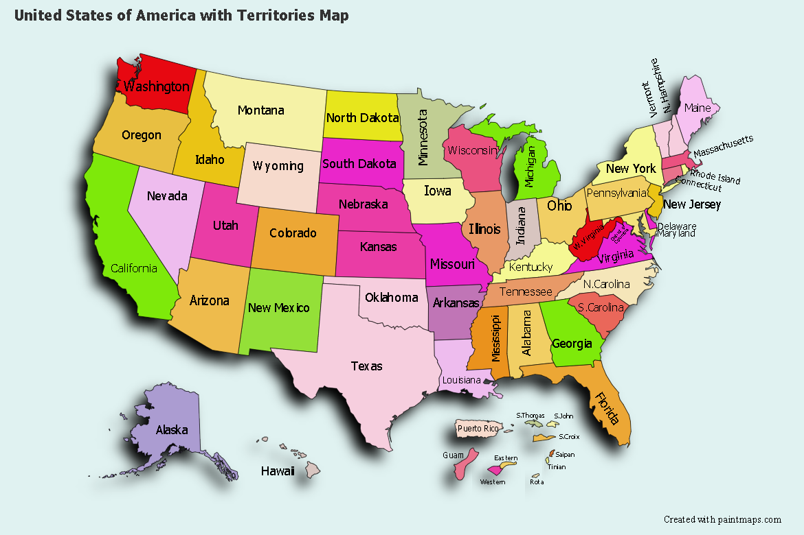

Les États-Unis, situés en Amérique du Nord, constituent un vaste territoire comptant 50 états fédéraux et un district. Le pays est entouré par le Canada du côté nord et le Mexique dans la partie sud. Sa structure géographique prend la forme d’un gradient est-ouest. L’ensemble du territoire couvre une superficie d’environ 9 631 417 km², répartie en trois grandes étendues avec la Mainland (plus de 7 millions de km²), l’Alaska (près de 1 100 000 km²) et Hawaï (environ 28 000 km²).
Par Vereecke Mathys